Programming, robotics, traveling
Навигация по проекту:
Тема ресайклинга интересовала меня всегда, и в этом году я снова активировался в плане своей давней идеи «сделать шреддер» или по-русски измельчитель пластика.
Среди всего необходимого оборудования для реализации маленького предприятия по переработке пластика, я выбрал сделать шреддер первым. Потому что чуть ранее я начал сортировать мусор на вторсырьё и понял, что огромные объёмы пластика можно было бы хранить намного выгоднее, а еще из него реально можно что-то сделать. А потом, вообще, осознал, что очень много выкидываю пластика: бампер от машины, корпуса от орг техники итд. По сути сейчас всё, что можно как-то реализовать, не выкидывая, это либо какое-то изделие (несущее полезную функцию) или металлалом. Мириться с этим я не хочу. Особенно при цене катушки пластика весом 750 г в 1000₽.
Ранее я никак не мог подойти к этому вопросу по нескольким причинам:
Все три проблемы в этом году отпали сами собой: я узнал проекте Precious Plastic, который лег в качестве готового плана для реализации.
Его создатель – Дейв Хеккенс создал лабу и сообщество ресайклеров вокруг неё. Вместе они разработали полностью открытый проект по помощи в создании мини-предприятия по переработке пластиковых отходов. У них есть:
Едем дальше 👇
На сайте Precious Plastic есть две модели шреддеров: обычная версия и pro-версия.
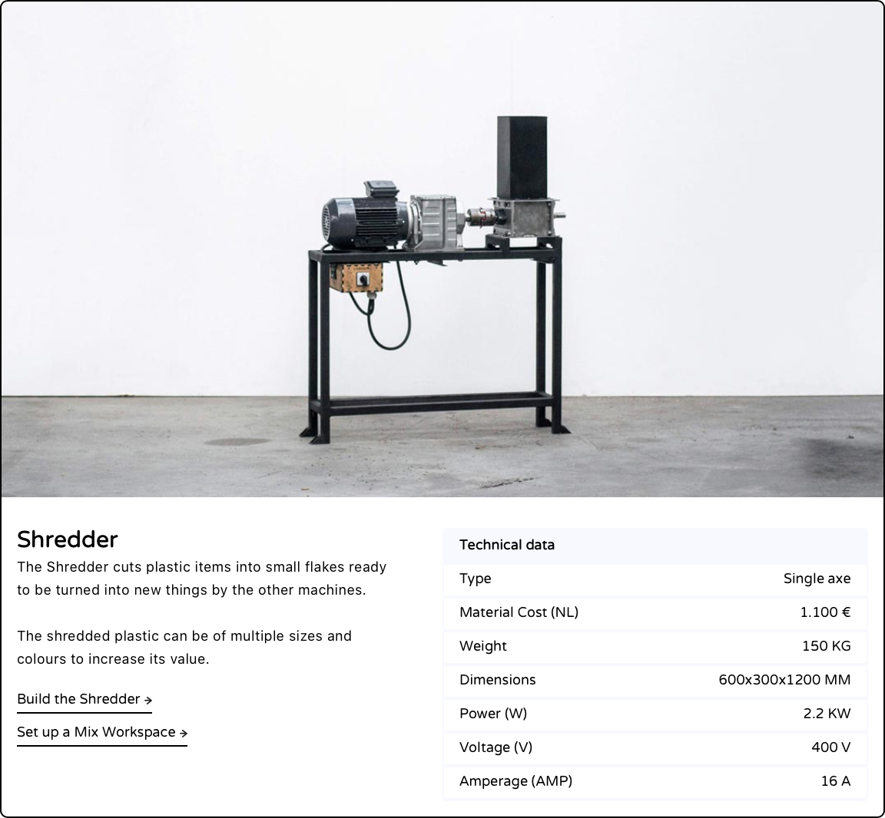
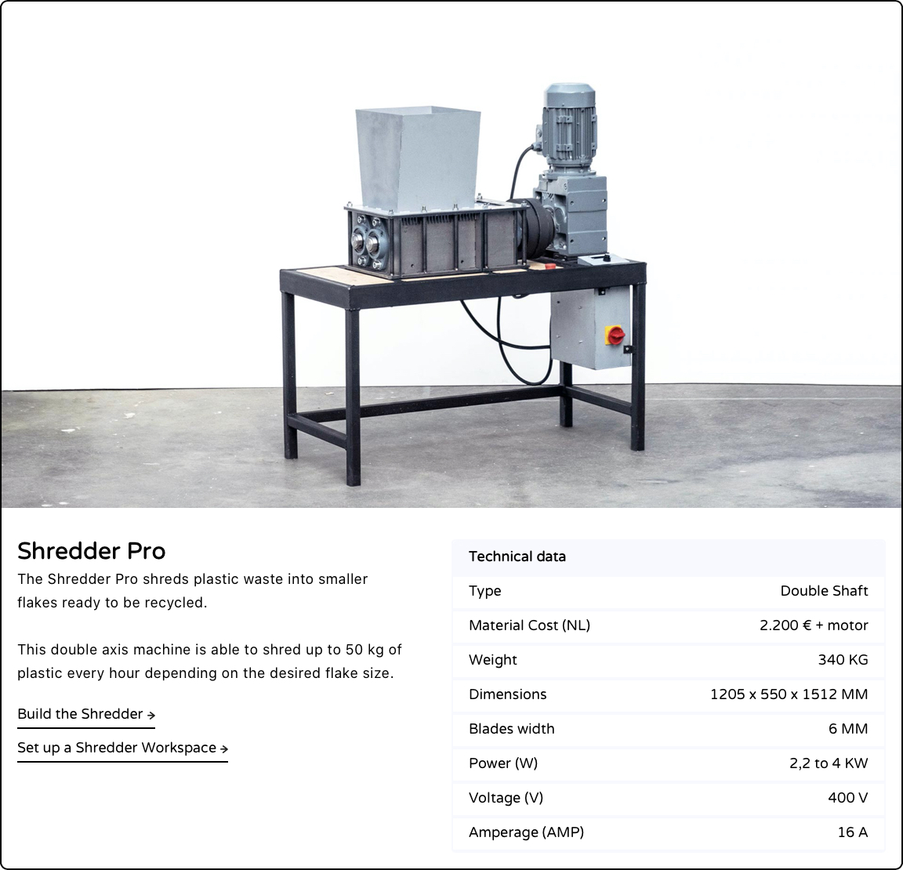
Тк мне интересно сделать аппарат с возможность переработки оргтехники и даже автомобильных частей, выбор пал на pro-версию.
Честно, только после погружения в тему, это видео вызвало у меня эмоции, что это действительно сложно.
Все материалы для сборки шреддера можно найти здесь.
Корову нужно есть по-частям, поэтому разделим процесс по созданию шреддера на 4 части:
Изначально я думал уложиться в 5-7 тыс. рублей за мотор-редуктор, но с изучением темы немного расстроился.
Выбор мотор-редуктора первая часть с которой я начну, тк это дорогой узел, который нужно выбрать очень внимательно. На изображении выше отсуствует именование мотора или редуктора, есть лишь некоторые характеристики (и нет пояснения, почему так, а не иначе). Более того эта информация отсуствует также и в документации. Попробуем разобраться.
На видео по сборке шреддера pro-версии нашел момент, где была видна табличка на моторе
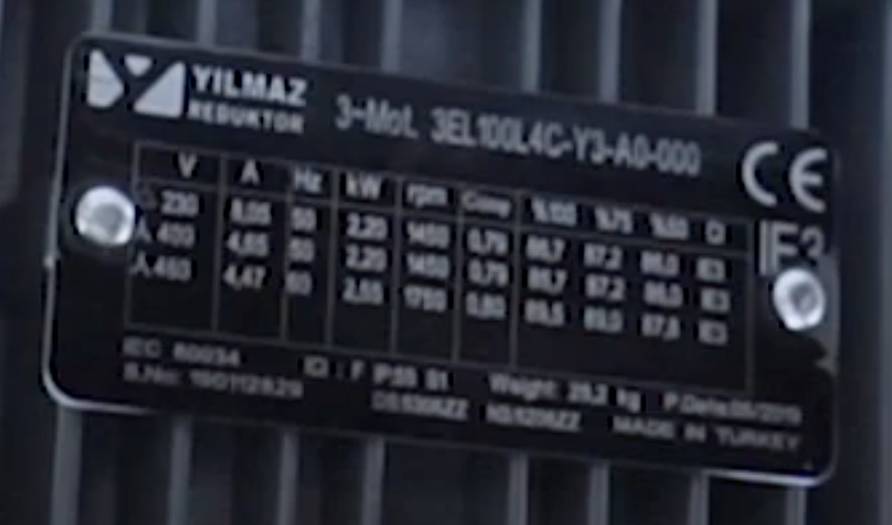
Кажется у них стоит мотор-редуктор серии KR компании YILMAZ Reductor.
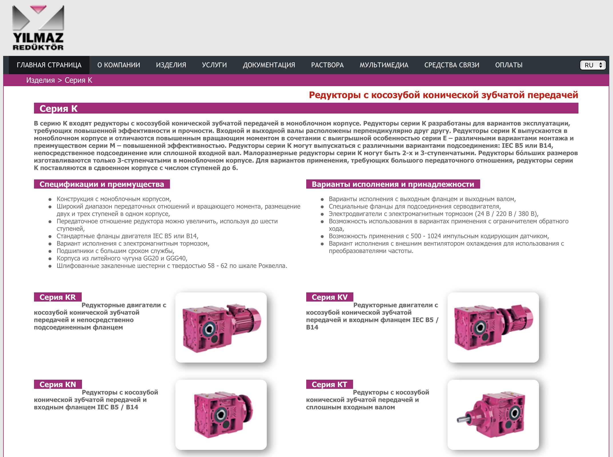
Если открыть авито и ввести «мотор+редуктор» будет достаточно большая выдача и кучей разных моторов.
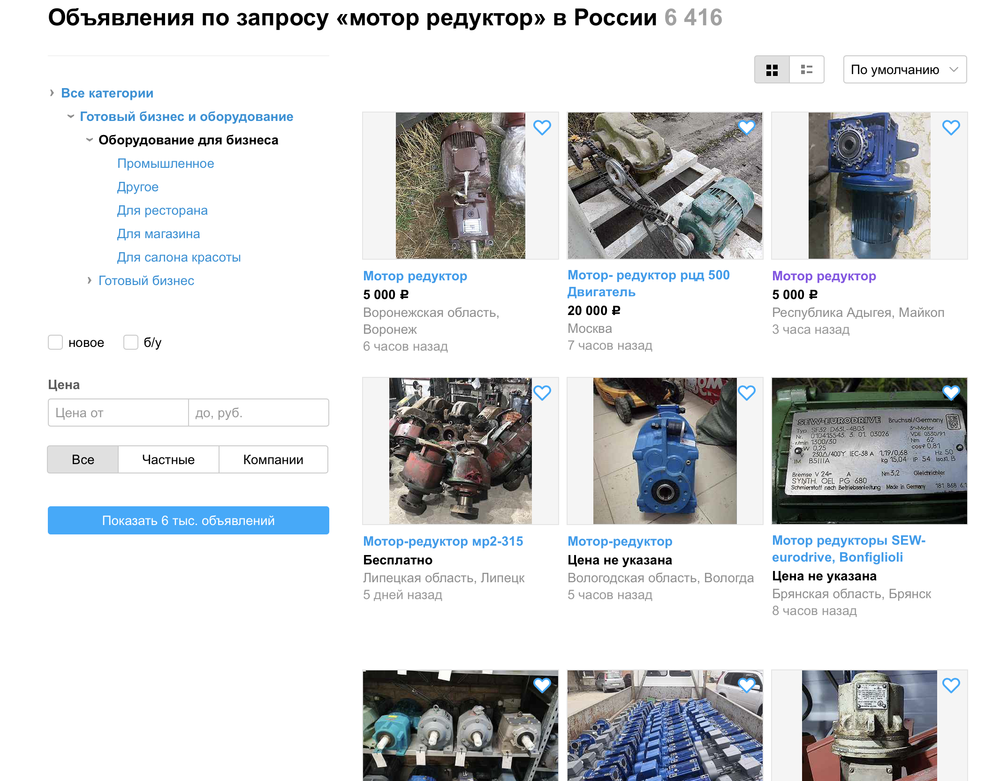
Поэтому я начну с ограничений и сужения области поиска.
Мне нравится формат в котором двигатель и редуктор имею вертикальную компоновку (как у ребят из Precious Plastic), это экономит место и выглядит очень эстетично на мой вкус.
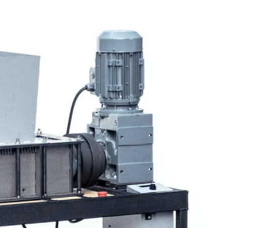
Первое, что привлекает взгляд – прямоугольный блок под двигателем – червячный редуктор. После некоторого поиска оказалось, что есть некоторый стандарт именования червяных редукторов подобного плана.
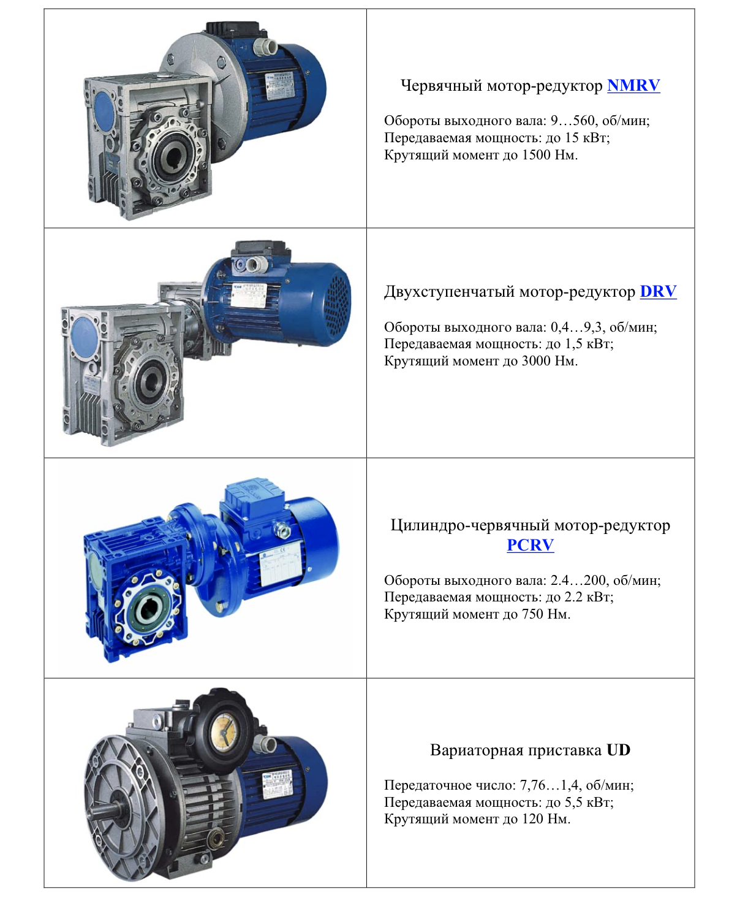
И что необходимый формат редуктора носит название NMRV и имеет ряд размеров 30, 40, ..., 110, 130, 150.
Подробную информацию можно найти в этом pdf документе.
Каждый типо-размер редуктора имеет совместимость с креплениями электродвигателя по классификации IEC.
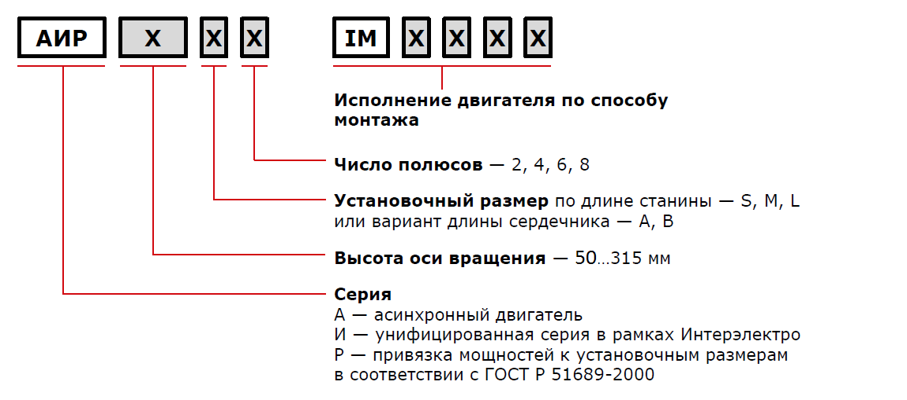
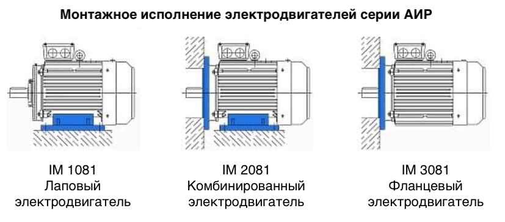
Подробнее про стандарт
IECи его совместимость с американским стандартомNEMAпо ссылке.
Как видно в маркировке совсем отсуствует мощность двигателя, напряжение питания и частота вращения ротора. Однако не сложно предположить, что чем больше размеры двигателя, а тоесть его высота оси вращения и установочный размер по длине станины, тем мощнее и сам двигатель. Для того, чтобы определить другие характеристики двигателя введена серия.
Электродвигатели серии АИР - унифицированная серия асинхронных электродвигателей. Серия АИР охватывает диапазон мощностей от 0,06 до 315 кВт. А также она очень распространена на российском рынке, в тч на вторичке.
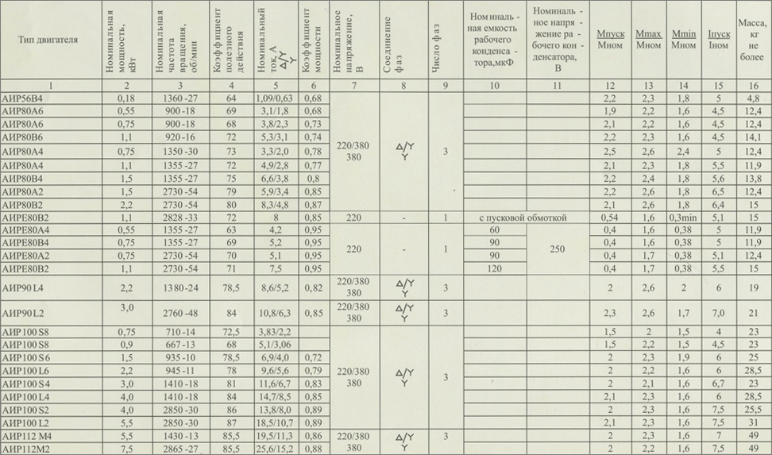
Подробнее по ссылкам:
Также из материалов с сайта egm-energo.ru я подготовил сводную таблицу мощностей и частот для двигателей серии АИР.
Теперь когда есть полный список моделей редукторов и двигателей нужно определить требуемые характеристики (именно эти характеристики являются основными в выборе агрегата):
Отдельно вынесу вопрос питания электродвигателя.
И так рассмотрим информацию на сайте Precious Plastic:
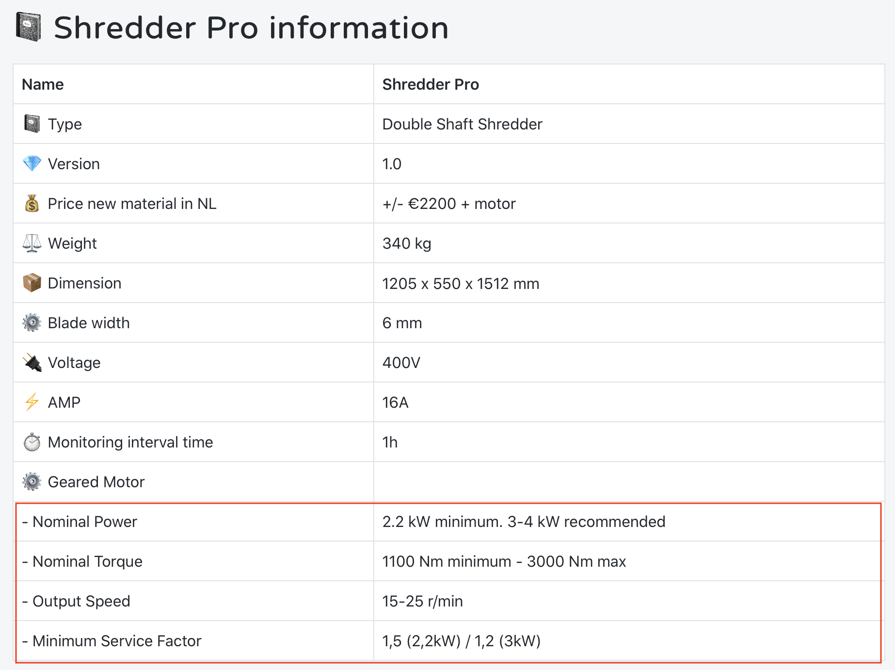
Со страницы подробного описания шреддера (версия Pro), она равна 15-25 об/мин. Хотя странно тк для простой версии это частота намного выше.
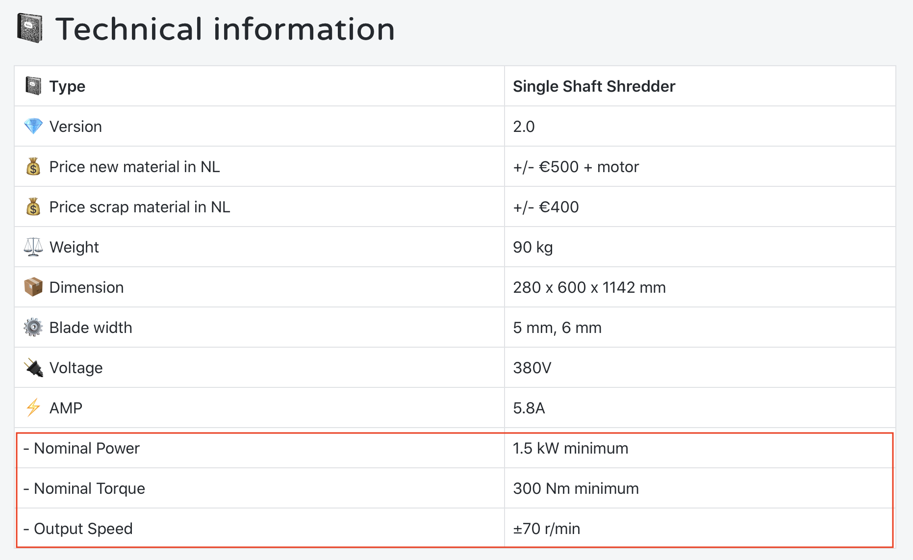
Чтобы составить своё мнение на счет частоты вращения, я нашел следующее видео подобного шреддера в котором на мой взгляд очень большая частота вращения. Подсчитав время одного оборота (3c) на замедленном воспроизведении получается 80 об/мин. Я понял, что скорость как минимум должна быть в 4 раза ниже, что в принципе соответствует скорости у ребят из Precious Plastic. Поэтому я принял решение добавить условие 15-25 об/мин.
Выходной момент силы в таблице с характеристиками ограничен от 1000 Нм до 3000 Нм. Не совсем очевидно почему именно такой (видимо они это попробовали эксперементально) и почему он не может быть больше. Но примем за данность и рассмотрим некоторые источники с тестами конфигураций мотор-редукторов и получаемыми крутящими моментами.
В справочнике компании технопривод, что я также приводил выше, содержится следующая информацию по мотор-редукторам:
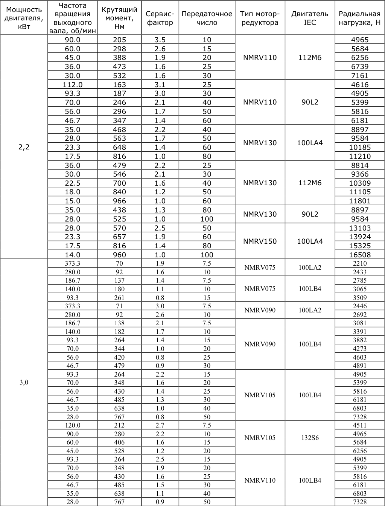
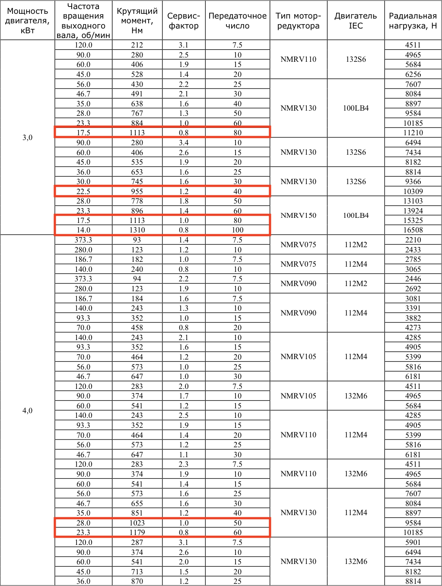
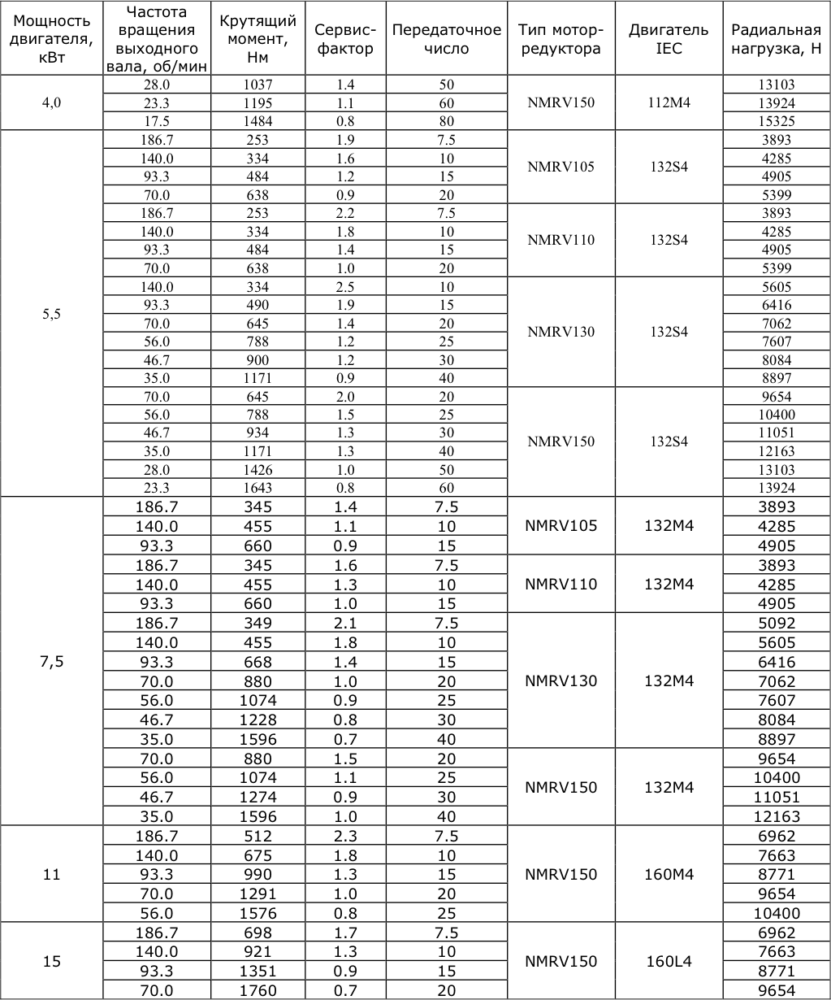
Сервис-фактор – относительный показатель (безопасности), вычисляемый опытным путем, который позволяет судить о ресурсе – запасе прочности – устройства. Как и номинальный крутящий момент или типоразмер, сервис-фактор редуктора (моторного) не является стандартизированной величиной и может отличаться у разных производителей.
- сервис-фактор мотор-редуктора на уровне 1,23 значит, что система будет работать без сбоев при максимальном увеличении нагрузки относительно номинальной на 23%;
- показатель в 0,89 означает, что редуктор не выдержит и полной нагрузки по паспорту, максимум без риска поломки – до 89% от номинала.
Подробнее здесь.
Красным я отметил более менее подходящие под выбранные характеристики агрегаты (без учета сервис-фактора). Кстати интересно, но для большинства агрегатов с крутящим моментом > 1000Нм и сервис-фактором с запасом, мощность моторов больше 4кВт.
Странно, но как мне кажется в таблице есть ошибка тк в серии АИР, 132S4 – это 7.5 кВт двигатель, а не 5.5 кВт (хотя мб это просто другая серия).
Также подобные параметры можно найти здесь:
Я провел поиск NMRV130 и NMRV150 по всей России в авито и нашел несколько объявлений подавляющее число которых представлены компаниями по цене новых, что выходит из моего бюджета. Всего пару продавцов-частников продают б/у редукторы:
NMRV150-50 + АИР 132S4
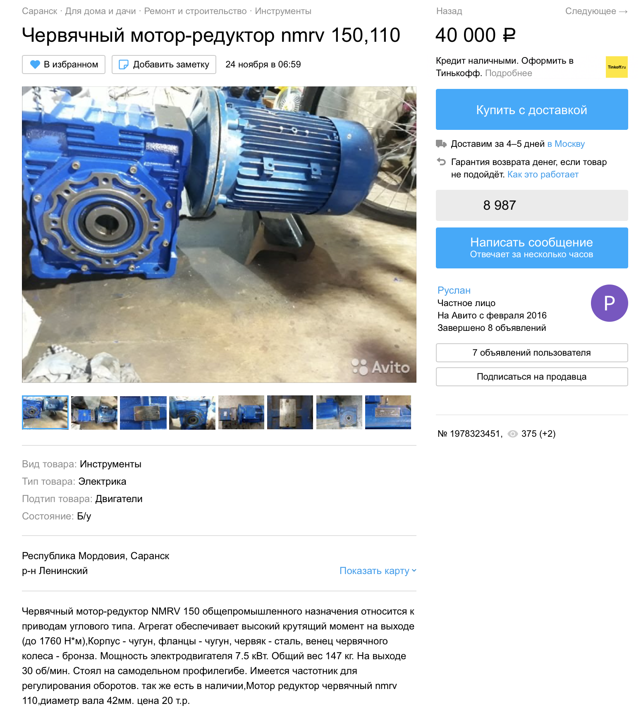
NMRV150-20 + АИР 132S4
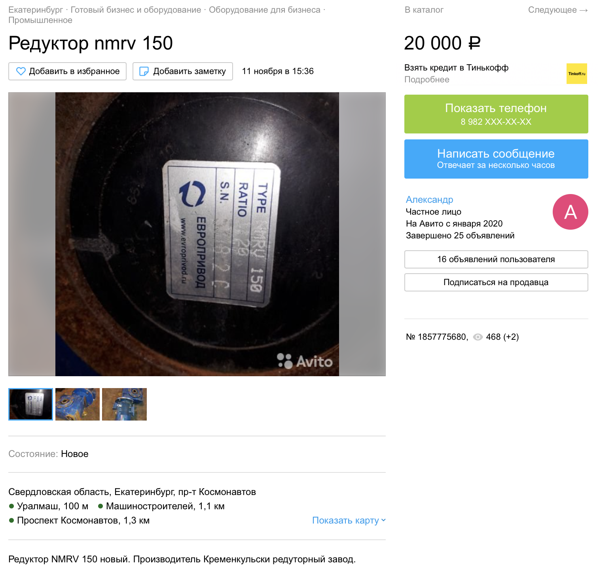
Также у второго продавца также продавался NMRV130-20 + АИР 112М4
Мотор-редукторы 2го продавца имели выходную частоту вращения 60 об/мин. Единственный во всей России мотор-агрегат который мне подходит был только у первого продавца, однако мой бюджет был 25 тысяч рублей максимум с доставкой. Тогда я позвонил и предложил купить этот мотор за 20 тысяч рублей. Было очень неудобно так сильно скидывать цену, но это было единственное во всей России подходящее мне решение. Цену я агрументировал, скинув ссылку на предложение второго продавца с неподходящим передаточный числом. На следующий день мне перезвонил продавец и дал своё согласие.
Тут начался квест, дело в том, что агрегат находился в Мордовии в р.п. Зубова Поляна.
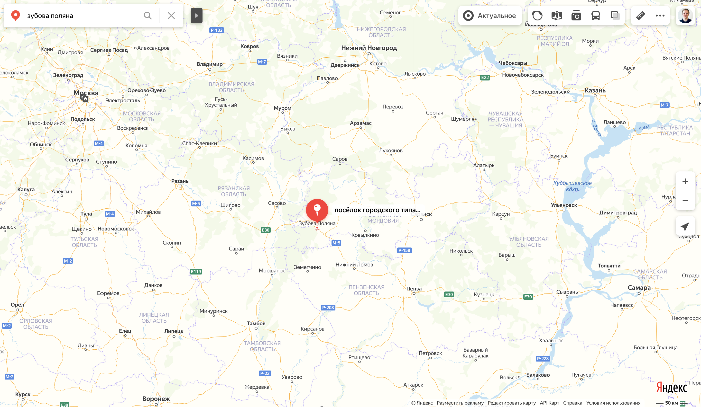
Через поселок проходят две транспортные линии: трасса М5 и железнодорожная ветка до Москвы.
РЖД Логистика, занимающаяся перевозками небольших грузов. Удивительно, но они принимают грузы только из терминала в Саранске (хотя станция находится прямо в нужном мне поселке и даже поезда дальнего следования останавливаются там) и предложили тоже сделать забор груза с немаленьким чеком.Итого: Через 3 дня после согласия продавца я получил агрегат у своего подъезда за 22 тысячи рублей 🥳.
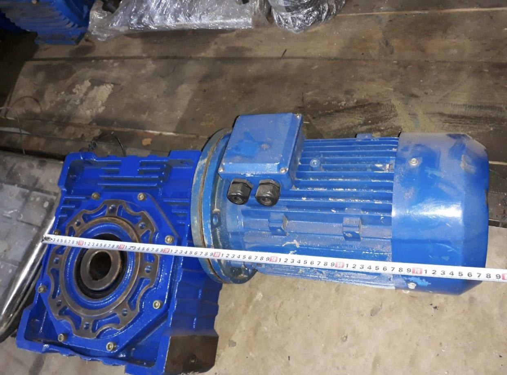
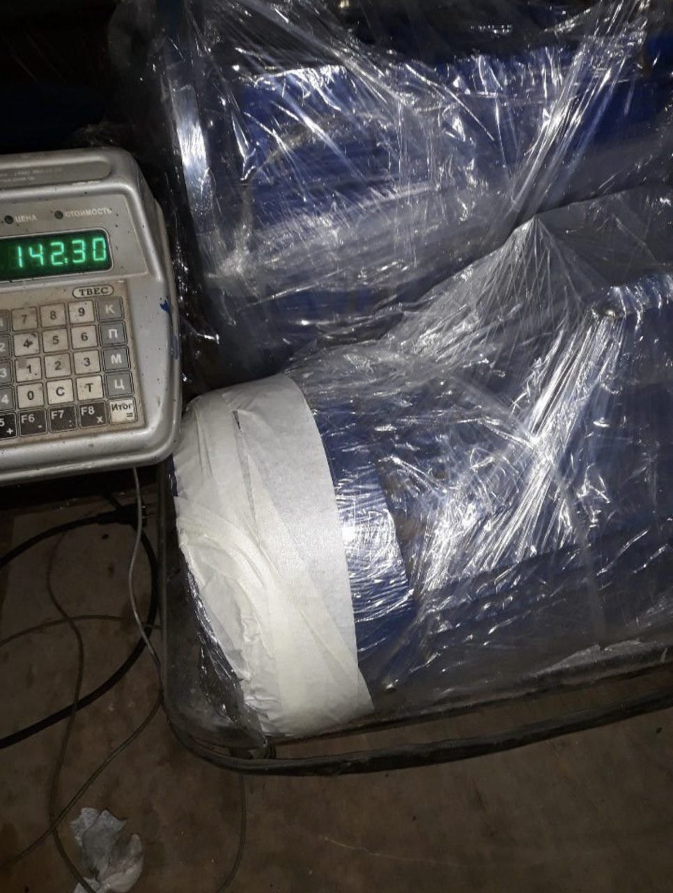
Однако на этом все не закончилось и меня ждал еще один квест: я полагал, что я занесу это все один к себе в офис на 4 этаж (тк мотор отсоединен от редуктора), однако я физически не смог поднять редуктор и пришлось пол 6 утра (так приехала машина) звонить другу! И даже вдвоём эта задача оказалась очень тяжелой.
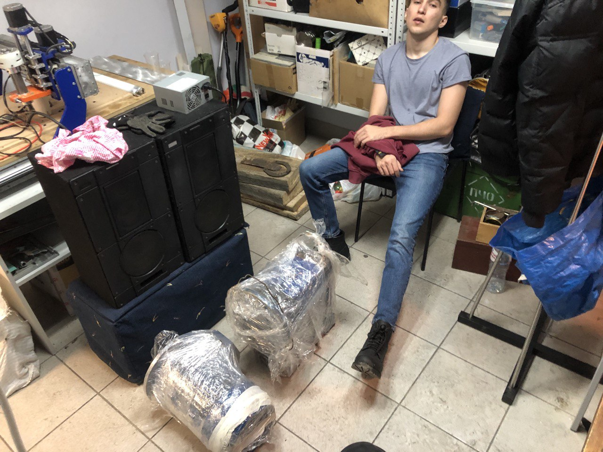
У меня в офисе однофазная сеть, один из самых дешевых способов запитать 3-фазный мотор – использовать схему на основе конденсатора. Однако, насколько мне удалось выяснить, если начальная нагрузка на мотор велика конденсаторная схема не сработает. Также КПД двигателя при питании с помощью кондесаторной схемы падает на 30-50%.
Поэтому я начал искать на авито контроллер трехфазного двигателя (частотный преобразователь). Он имеет ряд плюсов:
Среди стандратных решений в промышленных форм-факторах, я нашел, необычно выглядещий, прибор от компании из Харькова МПСР СО-1-35. Данный прибор имеет уникальную характеристику: мощность 5.5кВт при питании от однофазной сети, а также критически низкую стоимость. В последствии, если мощности однофазной сети не хватит, преобразователь можно подключить к трехфазной сети.
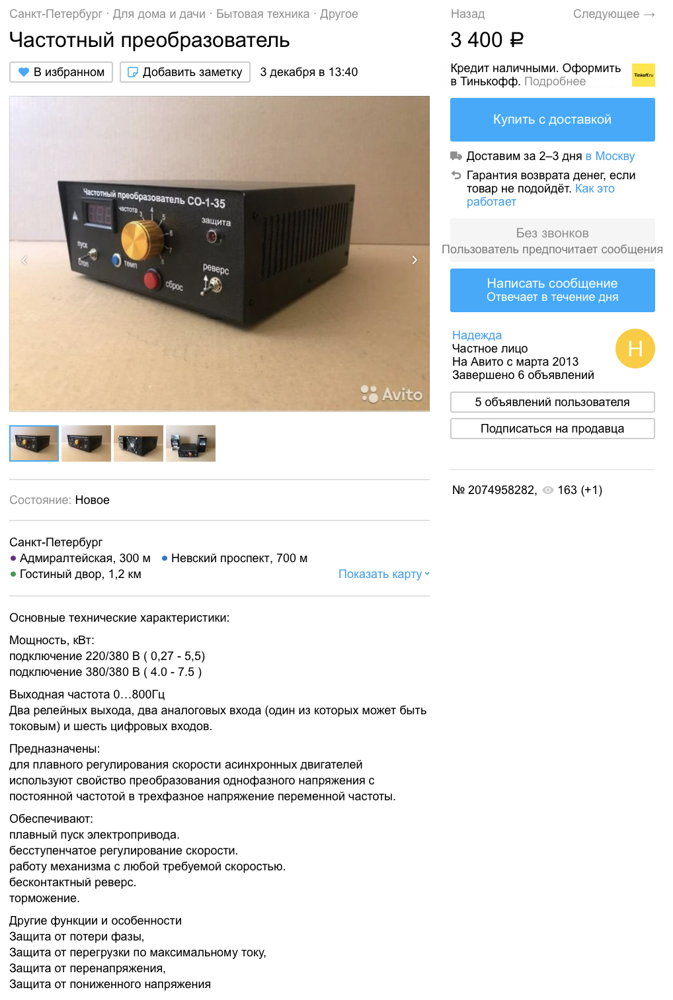
Посмотрим, удастся ли купить этот прибор за ту сумму что заявлена, у меня есть сомнения. По мере поступления новостей, обновлю эту статью.
Конечно, не стоит забывать, что офисная проводка, где я планирую размещать аппарат мб не рассчитана на большие токи и нужно быть осторожным. По расчетам стандартная медная проводка 2.5 мм² выдерживает до 27 ампер или 5.9 кВт при 220 вольтах в однофазной сети переменного напряжения.